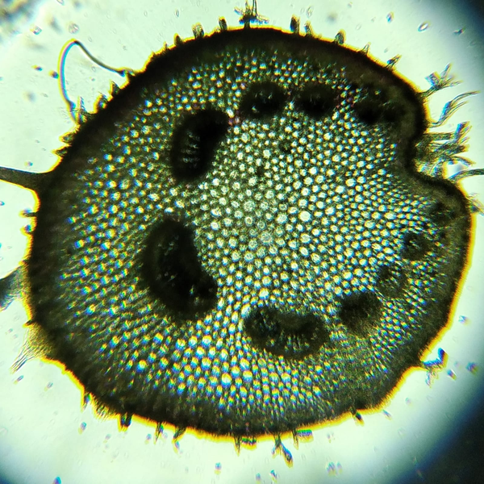
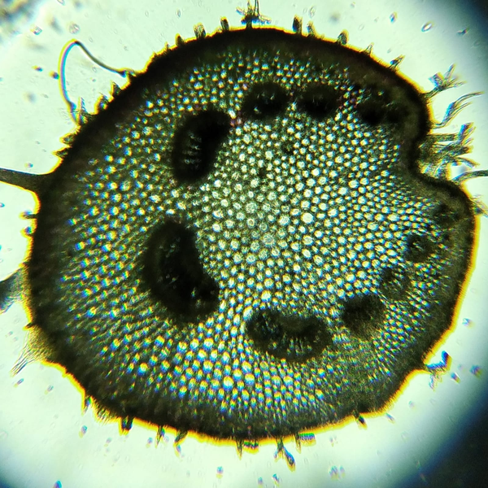

PIXIRICA
 

Clidemia hirta (L.) D. Don é um arbusto pertencente à família Melastomataceae, popularmente conhecida como pixirica, mirtilo- amazônico, buxixu, mirtilo- brasileiro ou Brazilian blueberry. Sua denominação jeje-nagô é Ewé Inón e seus orixás relacionados são Exú, Oyá e Xangô. Segundo a classificação jeje-nagô, a pixirica pertence ao elemento fogo, sendo seu gênero o feminino. Sentidos: Os caules da pixirica apresentam intensa pilosidade e suas folhas apresentam borda serrilhada e é marcada pelas nervuras, estimulando nosso tato. Os frutos são comestíveis in natura, estimulando nosso paladar. Além disso, a coloração dos frutos é devido à presença de antocianinas, dando a coloração roxa-escura/ azul escuro que é tão bela e estimula nossa visão. Usos: É PANC! Os frutos de cor roxa escura, com polpa suculenta e com micro sementes são comestíveis. Estes são de sabor agradáveis e ricos em vitamina C e antioxidantes. Podem ser consumidos in natura, ou em diversas receitas e pratos.